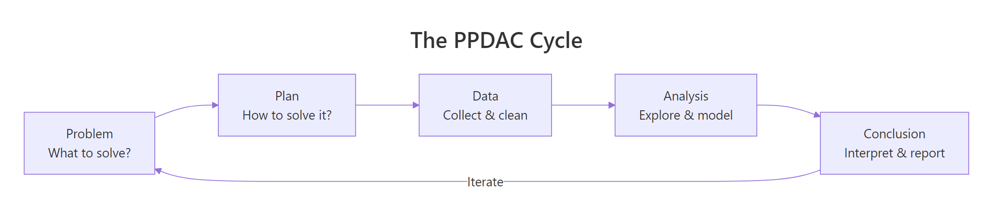
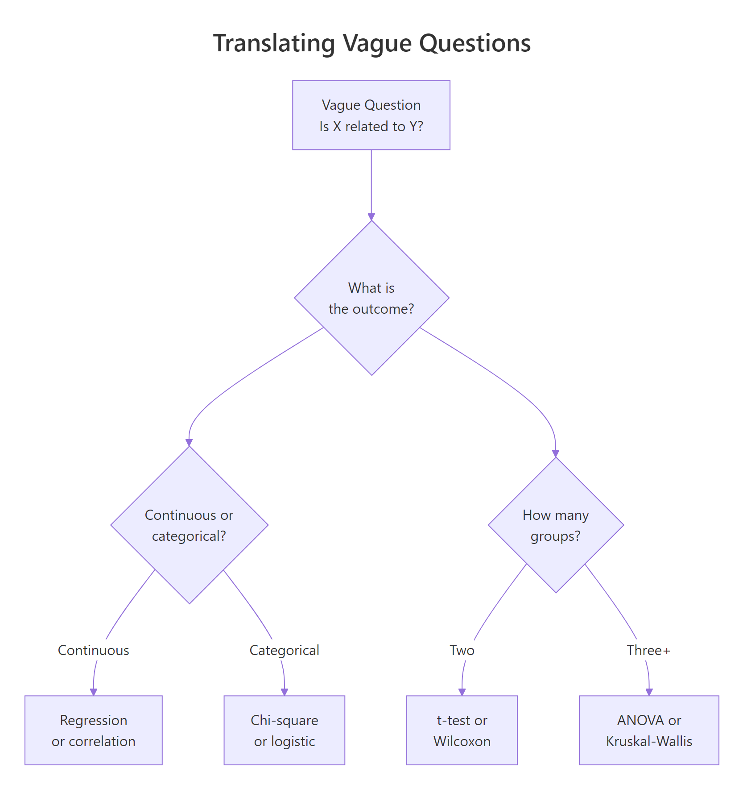

Statistical Consulting in R: A Problem-Solving Framework That Works Every Time
By Selva Prabhakaran · Published April 20, 2026 · Last updated April 20, 2026
Statistical consulting is the practice of translating a client's real-world question into a well-defined statistical problem, choosing the right analysis, and communicating results that non-statisticians can act on.
A client emails you a spreadsheet and says "Can you tell me if X causes Y?" What do you do first? If your instinct is to open R and start running tests, pause. The most expensive mistake in consulting is answering the wrong question quickly.
Introduction
Statistical consulting is not the same as running a t-test or fitting a regression model. Those are tools. Consulting is the process that decides which tool to use, whether the data supports using it, and how to explain the result to someone who has never heard of a p-value.
Every consulting engagement follows a predictable arc. The client has a question. You translate that question into something testable. You check whether the data can answer it. You run the analysis. Then you write a report that changes a decision. Miss any step, and you waste time or deliver the wrong answer.
This tutorial teaches a five-step framework called PPDAC that keeps every consulting project on track. You will build R functions that structure each step, from translating vague questions into testable hypotheses to generating report skeletons your clients can actually read. Every code block runs in your browser. Click Run on the first block, then work top to bottom, variables carry over between blocks like a notebook.
We use base R throughout. No external packages are needed.
What is the PPDAC cycle and why does every consulting project need it?
PPDAC stands for Problem, Plan, Data, Analysis, and Conclusion. It was introduced by MacKay and Oldford in 1994 and later popularized by David Spiegelhalter in "The Art of Statistics." The framework gives you a repeatable structure for any data problem, from a one-hour client call to a six-month research project.
The key insight is that PPDAC is a cycle, not a checklist. You will revisit earlier stages as you learn more. A data quality issue discovered during Analysis sends you back to Data. A surprising result in Conclusion sends you back to Problem to ask whether you framed the question correctly.

Figure 1: The PPDAC cycle: Problem, Plan, Data, Analysis, Conclusion, and back again.
Let's build a structured PPDAC template in R. This function creates a consulting project as a named list, so every project you take on follows the same format.
RBuild a PPDAC project structure
# Build a PPDAC project structureconsulting_project <-list( problem =list( client_question ="Do older employees have higher job satisfaction?", population ="Full-time employees at Company X", outcome ="Job satisfaction score (1-10)", predictor ="Age (years)", decision ="Whether to adjust retention programs by age group" ), plan =list( design ="Cross-sectional survey analysis", method ="Linear regression with satisfaction ~ age", sample_size ="All 200 employees surveyed in Q1 2026", assumptions ="Linear relationship, normal residuals, no confounders" ), data =list( source ="HR database export, anonymised", variables =c("employee_id", "age", "satisfaction_score", "department"), quality ="Check for missing values, outliers, duplicate IDs" ), analysis =list( exploratory ="Scatter plot of age vs satisfaction", primary ="lm(satisfaction ~ age)", secondary ="Add department as covariate" ), conclusion =list( summary ="To be completed after analysis", limitations ="Cross-sectional design cannot prove causation", recommendations ="To be completed after analysis" ))# Print the Problem stagecat("=== PROBLEM ===\n")cat("Client question:", consulting_project$problem$client_question, "\n")cat("Population:", consulting_project$problem$population, "\n")cat("Outcome:", consulting_project$problem$outcome, "\n")cat("Decision:", consulting_project$problem$decision, "\n")#> === PROBLEM ===#> Client question: Do older employees have higher job satisfaction?#> Population: Full-time employees at Company X#> Outcome: Job satisfaction score (1-10)#> Predictor: Age (years)#> Decision: Whether to adjust retention programs by age group
The named list keeps every stage accessible. You can update consulting_project$conclusion$summary after running the analysis, and the entire project stays in one object. This is the backbone of every consulting workflow you will build.
Key Insight
The PPDAC cycle is iterative, not linear. A data quality problem discovered in the Analysis stage sends you back to Data. A surprising result in Conclusion sends you back to Problem. Treating it as a straight pipeline is the most common consulting mistake.
Try it: Create a PPDAC project list for a hospital that wants to know whether readmission rates differ between two wards. Fill in the problem and plan stages only.
RExercise: hospital readmission PPDAC
# Try it: hospital readmission PPDACex_hospital <-list( problem =list( client_question =# your code here ), plan =list( design =# your code here ))# Test:cat("Question:", ex_hospital$problem$client_question)#> Expected: a question about readmission rates between wards
Click to reveal solution
RHospital PPDAC solution
ex_hospital <-list( problem =list( client_question ="Do readmission rates differ between Ward A and Ward B?", population ="All patients discharged from Wards A and B in 2025", outcome ="30-day readmission (yes/no)", predictor ="Ward (A or B)", decision ="Whether to investigate ward-specific discharge protocols" ), plan =list( design ="Retrospective cohort comparison", method ="Chi-squared test or logistic regression", sample_size ="All discharges in 2025 (~800 patients)", assumptions ="Independent observations, sufficient cell counts" ))cat("Question:", ex_hospital$problem$client_question)#> [1] Question: Do readmission rates differ between Ward A and Ward B?
Explanation: The problem stage names the outcome (readmission), the comparison (ward), and the decision that depends on the answer. The plan stage picks the method before touching any data.
How do you translate a vague client question into a testable hypothesis?
Clients rarely arrive with a testable hypothesis. They say things like "Is X related to Y?" or "Why are our numbers down?" Your first job is to turn that vague question into something a statistical test can answer. This requires identifying four components: the outcome variable, the predictor, how they are measured, and the population.
Let's build a function that structures this translation. It takes a vague question and the four components, then prints a formatted hypothesis.
RTranslate vague question into hypothesis
# Function to translate vague questions into structured hypothesesquestion_to_hypothesis <-function(vague_question, outcome, predictor, measurement, population) { hypothesis <-list( original = vague_question, outcome = outcome, predictor = predictor, measurement = measurement, population = population, testable =paste0("Among ", population, ", is ", predictor," associated with ", outcome," (measured as ", measurement, ")?" ) )cat("Original: ", hypothesis$original, "\n")cat("Testable: ", hypothesis$testable, "\n")cat("Outcome: ", hypothesis$outcome, "\n")cat("Predictor: ", hypothesis$predictor, "\n\n")invisible(hypothesis)}# Example: vague business questionq1 <-question_to_hypothesis( vague_question ="Is advertising working?", outcome ="monthly revenue", predictor ="advertising spend", measurement ="dollars per month", population ="retail stores in the Midwest region")#> Original: Is advertising working?#> Testable: Among retail stores in the Midwest region, is advertising spend associated with monthly revenue (measured as dollars per month)?#> Outcome: monthly revenue#> Predictor: advertising spend
The vague question "Is advertising working?" becomes a precise, testable statement. Now let's apply this to two more real-world client questions to show the pattern.
RMore vague-to-testable translations
# More translationsq2 <-question_to_hypothesis( vague_question ="Why is employee turnover so high?", outcome ="voluntary turnover within 12 months", predictor ="manager satisfaction rating", measurement ="binary (left/stayed) and 1-5 scale", population ="all full-time employees hired in 2024")#> Original: Why is employee turnover so high?#> Testable: Among all full-time employees hired in 2024, is manager satisfaction rating associated with voluntary turnover within 12 months (measured as binary (left/stayed) and 1-5 scale)?#> Outcome: voluntary turnover within 12 months#> Predictor: manager satisfaction ratingq3 <-question_to_hypothesis( vague_question ="Are our students performing well?", outcome ="final exam score", predictor ="study hours per week", measurement ="percentage score and self-reported hours", population ="undergraduate statistics students in Fall 2025")#> Original: Are our students performing well?#> Testable: Among undergraduate statistics students in Fall 2025, is study hours per week associated with final exam score (measured as percentage score and self-reported hours)?#> Outcome: final exam score#> Predictor: study hours per week
Notice that each translation forced a choice. "Are students performing well?" could mean dozens of things. By naming the outcome (exam score), predictor (study hours), and population (Fall 2025 undergraduates), you have eliminated ambiguity before writing a single line of analysis code.

Figure 3: Translating a vague question into a testable hypothesis by identifying outcome type and group count.
Tip
Always ask the client: "What decision will change based on the answer?" If they cannot name a decision, the question is not ready for analysis. This one question saves more consulting hours than any statistical technique.
Try it: Translate the vague question "Do our customers like the new product?" into structured components using question_to_hypothesis().
RExercise: customer satisfaction translation
# Try it: translate a customer satisfaction questionex_q <-question_to_hypothesis( vague_question ="Do our customers like the new product?", outcome =# your code here, predictor =# your code here, measurement =# your code here, population =# your code here)#> Expected: a testable question with named outcome, predictor, measurement, population
Click to reveal solution
RCustomer satisfaction solution
ex_q <-question_to_hypothesis( vague_question ="Do our customers like the new product?", outcome ="product satisfaction rating", predictor ="product version (old vs new)", measurement ="1-5 Likert scale from post-purchase survey", population ="customers who purchased in the last 6 months")#> Original: Do our customers like the new product?#> Testable: Among customers who purchased in the last 6 months, is product version (old vs new) associated with product satisfaction rating (measured as 1-5 Likert scale from post-purchase survey)?
Explanation: Naming the predictor as "product version (old vs new)" turns a vague sentiment question into a testable comparison between two groups.
How do you scope a statistical analysis before writing any code?
Scoping is the step that separates professional consulting from ad-hoc analysis. A scope document defines what you will deliver, what data you need, what methods you will use, and what you will not do. Without it, projects expand silently until nobody remembers what the original question was.
The consulting literature calls this a Scope of Work (SOW). Peterson et al. (2022) identified scope creep as the single biggest risk in statistical consulting. Their solution is simple: write it down before you start, and get the client to agree.
# Function to scope a consulting projectscope_analysis <-function(project_name, question, deliverables, data_needed, methods, timeline, out_of_scope) { scope <-list( project = project_name, question = question, deliverables = deliverables, data_needed = data_needed, methods = methods, timeline = timeline, out_of_scope = out_of_scope, created =Sys.Date() )cat("=== SCOPE OF WORK ===\n")cat("Project: ", scope$project, "\n")cat("Question: ", scope$question, "\n")cat("Deliverables: ", paste(scope$deliverables, collapse =", "), "\n")cat("Methods: ", paste(scope$methods, collapse =", "), "\n")cat("Timeline: ", scope$timeline, "\n")cat("Out of scope: ", paste(scope$out_of_scope, collapse =", "), "\n")cat("Created: ", as.character(scope$created), "\n")invisible(scope)}# Demo: scope an employee satisfaction analysisemployee_scope <-scope_analysis( project_name ="Employee Satisfaction vs Age", question ="Is employee age associated with job satisfaction?", deliverables =c("Written report", "R script", "Summary presentation"), data_needed =c("Employee age", "Satisfaction score", "Department"), methods =c("Descriptive statistics", "Linear regression", "Residual diagnostics"), timeline ="2 weeks from data receipt", out_of_scope =c("Causal inference", "Predictive modeling", "Survey design"))#> === SCOPE OF WORK ===#> Project: Employee Satisfaction vs Age#> Question: Is employee age associated with job satisfaction?#> Deliverables: Written report, R script, Summary presentation#> Methods: Descriptive statistics, Linear regression, Residual diagnostics#> Timeline: 2 weeks from data receipt#> Out of scope: Causal inference, Predictive modeling, Survey design
The "out of scope" field is the most important line. It sets a boundary. When the client later asks "Can you also predict next year's turnover?", you point to the scope and say "That is a separate project." This protects both sides.
Figure 2: Six steps to scope a consulting project before writing any code.
Warning
Scope creep is the number one killer of consulting projects. It happens gradually, one extra analysis here, one additional variable there. Always document what is out of scope, and treat any addition as a scope change that requires a new agreement.
Try it: Add a "risks" field to the scope template by modifying scope_analysis(). Include at least two risks for the employee satisfaction project.
RExercise: add risks to scope
# Try it: add a risks field to the scopeex_scope <-scope_analysis( project_name ="Employee Satisfaction vs Age", question ="Is employee age associated with job satisfaction?", deliverables =c("Written report"), data_needed =c("Employee age", "Satisfaction score"), methods =c("Linear regression"), timeline ="1 week", out_of_scope =c("Causal inference"))# Now add risks manually:ex_scope$risks <-# your code herecat("Risks:", paste(ex_scope$risks, collapse ="; "))#> Expected: at least two specific risks
Click to reveal solution
RScope risks solution
ex_scope <-scope_analysis( project_name ="Employee Satisfaction vs Age", question ="Is employee age associated with job satisfaction?", deliverables =c("Written report"), data_needed =c("Employee age", "Satisfaction score"), methods =c("Linear regression"), timeline ="1 week", out_of_scope =c("Causal inference"))ex_scope$risks <-c("High missing data rate may reduce sample size below useful levels","Satisfaction scores may cluster at extremes (ceiling/floor effect)")cat("Risks:", paste(ex_scope$risks, collapse ="; "))#> [1] Risks: High missing data rate may reduce sample size below useful levels; Satisfaction scores may cluster at extremes (ceiling/floor effect)
Explanation: Adding a risks field forces you to think about what could go wrong before you start. This makes the scope document more honest and helps the client understand why timelines might shift.
How do you manage client expectations when results are surprising?
The hardest moment in consulting is when the data contradicts what the client hoped to find. They expected a strong relationship, but the correlation is 0.08. They wanted proof that their program works, but the p-value is 0.43. How you handle this moment determines whether the client trusts you or ignores the analysis.
The key is to set expectations before the analysis starts. Tell the client upfront that three outcomes are possible: the data supports their hypothesis, the data contradicts it, or the data is inconclusive. All three are valid results.
Let's simulate a scenario where a client believes ice cream sales cause drowning deaths. The data will show a correlation, but the real cause is a confounding variable (temperature).
RSimulate confounded ice cream and drowning
# Simulate confounded data: ice cream sales and drowningset.seed(101)n <-50temperature <-rnorm(n, mean =75, sd =10)ice_cream_sales <-200+5* temperature +rnorm(n, sd =30)drowning_deaths <-2+0.1* temperature +rnorm(n, sd =1.5)sim_data <-data.frame( temperature =round(temperature, 1), ice_cream_sales =round(ice_cream_sales), drowning_deaths =round(drowning_deaths, 1))# The client sees this correlationcor_result <-cor(sim_data$ice_cream_sales, sim_data$drowning_deaths)cat("Correlation (ice cream vs drowning):", round(cor_result, 3), "\n")# Naive regressionlm_result <-lm(drowning_deaths ~ ice_cream_sales, data = sim_data)cat("Naive p-value:", round(summary(lm_result)$coefficients[2, 4], 4), "\n")cat("Naive R-squared:", round(summary(lm_result)$r.squared, 3), "\n")#> Correlation (ice cream vs drowning): 0.452#> Naive p-value: 0.001#> Naive R-squared: 0.204
The correlation looks convincing. The p-value is below 0.05. A careless consultant would stop here and tell the client that ice cream sales predict drowning. But you know better. Let's build a function that generates a plain-English expectation summary, including what the data can and cannot tell us.
RPlain-English expectation summary
# Function to create a plain-English expectation summaryexpectation_summary <-function(model, outcome_name, predictor_name, confounders =NULL) { coefs <-summary(model)$coefficients p_val <- coefs[2, 4] r_sq <-summary(model)$r.squaredcat("=== EXPECTATION SUMMARY ===\n\n")cat("What the data shows:\n")if (p_val <0.05) {cat(" There IS a statistically significant association between\n")cat(" ", predictor_name, "and", outcome_name, "\n")cat(" (p =", round(p_val, 4), ", R-squared =", round(r_sq, 3), ")\n\n") } else {cat(" There is NO significant association between\n")cat(" ", predictor_name, "and", outcome_name, "\n")cat(" (p =", round(p_val, 4), ")\n\n") }cat("What the data CANNOT tell us:\n")cat(" - Whether", predictor_name, "CAUSES changes in", outcome_name, "\n")if (!is.null(confounders)) {cat(" - Whether the relationship disappears after accounting for:\n")cat(" ", paste(confounders, collapse =", "), "\n") }cat(" - Whether this pattern holds outside the sample period\n\n")cat("Recommended next step:\n")if (!is.null(confounders)) {cat(" Control for", paste(confounders, collapse =" and "),"before drawing conclusions.\n") }}# Apply to the ice cream exampleexpectation_summary( model = lm_result, outcome_name ="drowning deaths", predictor_name ="ice cream sales", confounders =c("temperature", "season"))#> === EXPECTATION SUMMARY ===#>#> What the data shows:#> There IS a statistically significant association between#> ice cream sales and drowning deaths#> (p = 0.001 , R-squared = 0.204 )#>#> What the data CANNOT tell us:#> - Whether ice cream sales CAUSES changes in drowning deaths#> - Whether the relationship disappears after accounting for:#> temperature, season#> - Whether this pattern holds outside the sample period#>#> Recommended next step:#> Control for temperature and season before drawing conclusions.
This function forces you to communicate both sides of every result. The client sees what the data shows and what it cannot prove. This is not hedging, it is honest consulting. The "cannot tell us" section protects you and educates the client at the same time.
Key Insight
Always present what the data says AND what it cannot say. Clients remember the limitations you warned them about. They forget the ones you skipped. A consultant who says "The correlation is significant, but it disappears when we control for temperature" builds more trust than one who says "It's significant."
Try it: Write a one-sentence plain-English interpretation of this result: a t-test comparing two groups yields p = 0.12 and a mean difference of 3.2 points.
RExercise: plain-English interpretation
# Try it: plain-English interpretationex_interpretation <-# your code here (a character string)cat(ex_interpretation)#> Expected: a sentence mentioning no significant difference, the size of the gap, and what it means
Click to reveal solution
RInterpretation solution
ex_interpretation <-paste("The two groups differed by 3.2 points on average,","but this difference was not statistically significant (p = 0.12),","meaning we cannot rule out that it occurred by chance.")cat(ex_interpretation)#> [1] The two groups differed by 3.2 points on average, but this difference was not statistically significant (p = 0.12), meaning we cannot rule out that it occurred by chance.
Explanation: A good plain-English interpretation names the effect size (3.2 points), the verdict (not significant), and what that means in practice (could be chance). It avoids jargon like "fail to reject the null."
How do you write a statistical report that non-statisticians understand?
The final deliverable in most consulting projects is a report. The client will never read your R script. They will read your report. If they cannot understand it, the analysis was wasted.
A good consulting report follows a predictable structure: Executive Summary, Methods, Results, Limitations, and Recommendations. The executive summary answers the client's question in one paragraph. Everything else is supporting evidence.
Let's build a report skeleton generator in R.
RGenerate report skeleton
# Function to generate a consulting report skeletongenerate_report_skeleton <-function(project_name, question, method_summary, key_finding, limitations, recommendations) { report <-list( title =paste("Statistical Consulting Report:", project_name), sections =list( executive_summary =paste("This report addresses the question:", question,"Using", method_summary, "we found that", key_finding ), methods =paste("We analysed the data using", method_summary,"All analyses were conducted in R." ), results =paste("Key finding:", key_finding), limitations =paste("Limitations:",paste(limitations, collapse =". ")), recommendations =paste("We recommend:",paste(recommendations, collapse =". ")) ) )cat("========================================\n")cat(report$title, "\n")cat("========================================\n\n")for (sec_name innames(report$sections)) {cat("---", toupper(gsub("_", " ", sec_name)), "---\n")cat(report$sections[[sec_name]], "\n\n") }invisible(report)}# Generate a skeleton reportfilled_report <-generate_report_skeleton( project_name ="Ice Cream Sales and Drowning", question ="Are ice cream sales associated with drowning deaths?", method_summary ="linear regression with 50 monthly observations", key_finding =paste("ice cream sales and drowning deaths are correlated","(r = 0.45, p = 0.001), but this association is likely","confounded by temperature." ), limitations =c("Observational data cannot establish causation","Temperature was not controlled in the primary model","Sample limited to one geographic region" ), recommendations =c("Do NOT use ice cream sales to predict drowning risk","Collect temperature data and re-run the analysis","Consider a controlled study if causal claims are needed" ))#> ========================================#> Statistical Consulting Report: Ice Cream Sales and Drowning#> ========================================#>#> --- EXECUTIVE SUMMARY ---#> This report addresses the question: Are ice cream sales associated with drowning deaths? Using linear regression with 50 monthly observations we found that ice cream sales and drowning deaths are correlated (r = 0.45, p = 0.001), but this association is likely confounded by temperature.#>#> --- METHODS ---#> We analysed the data using linear regression with 50 monthly observations All analyses were conducted in R.#>#> --- RESULTS ---#> Key finding: ice cream sales and drowning deaths are correlated (r = 0.45, p = 0.001), but this association is likely confounded by temperature.#>#> --- LIMITATIONS ---#> Limitations: Observational data cannot establish causation. Temperature was not controlled in the primary model. Sample limited to one geographic region.#>#> --- RECOMMENDATIONS ---#> We recommend: Do NOT use ice cream sales to predict drowning risk. Collect temperature data and re-run the analysis. Consider a controlled study if causal claims are needed.
The skeleton is deliberately simple. In practice, you would expand each section with tables, figures, and interpretation paragraphs. The point is to give every report the same bones, so you never forget a section and clients always know where to find the answer.
Tip
Lead with the business answer, then show the evidence. Executives read the first paragraph. Analysts read the methods. Put the conclusion in the executive summary, not at the end. If the client stops reading after page one, they still get the answer.
Try it: Write an executive summary for this result: a chi-squared test shows a significant association between department and promotion rate (p = 0.003, Cramer's V = 0.31).
RExercise: write executive summary
# Try it: write an executive summaryex_summary <-# your code here (a character string)cat("EXECUTIVE SUMMARY:\n", ex_summary)#> Expected: 2-3 sentences naming the finding, the strength, and what it means
Click to reveal solution
RExecutive summary solution
ex_summary <-paste("Promotion rates differ significantly across departments","(chi-squared test, p = 0.003).","The association is moderate (Cramer's V = 0.31),","suggesting that department membership explains roughly","a third of the variation in promotion likelihood.","We recommend reviewing promotion criteria by department.")cat("EXECUTIVE SUMMARY:\n", ex_summary)#> [1] EXECUTIVE SUMMARY:#> Promotion rates differ significantly across departments (chi-squared test, p = 0.003). The association is moderate (Cramer's V = 0.31), suggesting that department membership explains roughly a third of the variation in promotion likelihood. We recommend reviewing promotion criteria by department.
Explanation: The summary states the finding (departments differ), the effect size (moderate), and the actionable recommendation (review criteria). A non-statistician can read this and know what to do.
Common Mistakes and How to Fix Them
Mistake 1: Starting analysis before defining the question
Wrong:
RMistake: exploring without a question
# Client sends data, you immediately start exploringsummary(mtcars)cor(mtcars)
Why it is wrong: Without a defined question, every pattern looks interesting. You waste hours chasing correlations that the client never asked about, then deliver a report that answers the wrong question.
Correct: Always complete the Problem stage of PPDAC first. Define outcome, predictor, population, and the decision that depends on the answer. Only then open R.
Mistake 2: Using jargon in client reports
Wrong:
RMistake: stats jargon in the report
# In your report you write:cat("We reject H0 at alpha = 0.05 (t(48) = 2.31, p = 0.025).\n")#> We reject H0 at alpha = 0.05 (t(48) = 2.31, p = 0.025).
Why it is wrong: The client does not know what H0, alpha, or t(48) mean. They hired you because they are not a statistician. A report full of jargon tells the client nothing and makes them feel excluded.
✅ Correct:
RCorrect: client-friendly wording
# Write for the clientcat("The data shows a statistically meaningful difference between\n")cat("the two groups (p = 0.025). Employees in Group A scored\n")cat("3.2 points higher on average than Group B.\n")#> The data shows a statistically meaningful difference between#> the two groups (p = 0.025). Employees in Group A scored#> 3.2 points higher on average than Group B.
Mistake 3: Ignoring data quality checks before modeling
❌ Wrong:
RMistake: model before data checks
# Jump straight to the modelbad_data <-data.frame(x =c(1, 2, NA, 4, 999), y =c(3, 4, 5, NA, 7))lm(y ~ x, data = bad_data)#> Call:#> lm(formula = y ~ x, data = bad_data)#> Coefficients:#> (Intercept) x#> 3.6842 0.0053
Why it is wrong: The value 999 is almost certainly a data entry error, and R silently dropped the NA rows. The regression coefficient is meaningless because one outlier dominates the fit.
✅ Correct:
RCorrect: audit missing and outliers
# Always check data firstgood_data <-data.frame(x =c(1, 2, NA, 4, 999), y =c(3, 4, 5, NA, 7))cat("Missing values:\n")print(colSums(is.na(good_data)))cat("\nSummary:\n")print(summary(good_data))# Fix: investigate 999, then decide whether to remove or impute#> Missing values:#> x y#> 1 1#>#> Summary:#> x y#> Min. : 1.00 Min. :3.00#> 1st Qu.: 1.75 1st Qu.:3.75#> Median : 3.00 Median :4.50#> Mean :251.50 Mean :4.75#> 3rd Qu.:251.50 3rd Qu.:5.50#> Max. :999.00 Max. :7.00#> NA's :1 NA's :1
Mistake 4: Promising causation from observational data
❌ Wrong: "Our regression proves that advertising causes revenue to increase."
Why it is wrong: Regression measures association, not causation. There could be confounders (seasonal effects, market trends, competitor actions) that explain both advertising spend and revenue.
✅ Correct: "Advertising spend is positively associated with revenue (p < 0.01). However, this observational analysis cannot establish causation. A randomised experiment would be needed to confirm a causal effect."
Mistake 5: Not documenting assumptions and limitations
❌ Wrong: Delivering a report with no Limitations section.
Why it is wrong: Every statistical analysis rests on assumptions (normality, independence, no unmeasured confounders). If you do not document them, the client treats your results as absolute truth. When the assumptions are violated and results change, trust is destroyed.
✅ Correct: Include a Limitations section in every report. List the assumptions your analysis depends on, explain what happens if they are violated, and note any data gaps.
Practice Exercises
Exercise 1: Build a PPDAC structure from a vague business question
A retail chain manager says: "Sales are down this quarter. Can you figure out why?" Using the question_to_hypothesis() and scope_analysis() functions from this tutorial, produce a complete PPDAC structure and scope document.
RExercise 1: PPDAC for falling sales
# Exercise 1: PPDAC + scope for "sales are down"# Hint: first translate the vague question, then scope the analysis# Think about: what's the outcome? what are potential predictors?# What data would you need? What's out of scope?# Write your code below:
Click to reveal solution
RExercise 1 solution
# Step 1: Translate the questionmy_hypothesis <-question_to_hypothesis( vague_question ="Sales are down this quarter. Why?", outcome ="quarterly revenue change", predictor ="store location, product category, marketing spend", measurement ="dollar revenue by store-quarter", population ="all 45 retail stores, Q1 2025 vs Q1 2026")# Step 2: Scope the analysismy_scope <-scope_analysis( project_name ="Q1 Revenue Decline Investigation", question ="Which factors are most associated with the Q1 2026 revenue decline?", deliverables =c("Written report", "Store-level summary table", "R script"), data_needed =c("Store revenue by quarter", "Product category sales","Marketing spend by store", "Staff count by store"), methods =c("Descriptive comparison (Q1 2025 vs Q1 2026)","Multiple regression", "Subgroup analysis by region"), timeline ="3 weeks from data receipt", out_of_scope =c("Customer sentiment analysis", "Competitor pricing","Causal inference (would need experiment)"))
Explanation: The vague "why are sales down" becomes a structured comparison of Q1 periods. The scope names specific deliverables, data requirements, and boundaries. The client now knows exactly what they will get and what falls outside this engagement.
Exercise 2: Complete a mini consulting report
A fleet manager at a car company asks: "Which of our car models are most fuel-efficient?" Using the mtcars dataset, walk through the entire consulting pipeline: define the PPDAC structure, scope the analysis, run the analysis, and generate a report skeleton.
RExercise 2: full mtcars pipeline
# Exercise 2: Full consulting pipeline with mtcars# Hint: use question_to_hypothesis(), scope_analysis(),# lm() or aggregate(), and generate_report_skeleton()# The outcome is mpg, predictors could be cyl, wt, hp# Write your code below:
Click to reveal solution
RExercise 2 solution
# 1. Translate the questionfleet_q <-question_to_hypothesis( vague_question ="Which car models are most fuel-efficient?", outcome ="miles per gallon (mpg)", predictor ="number of cylinders, weight, horsepower", measurement ="mpg from standardised EPA tests", population ="32 car models in the 1974 Motor Trend dataset")# 2. Scopefleet_scope <-scope_analysis( project_name ="Fleet Fuel Efficiency Analysis", question ="Which car characteristics predict higher fuel efficiency?", deliverables =c("Report with top 5 most efficient models", "Regression model"), data_needed =c("mpg", "cyl", "wt", "hp", "model name"), methods =c("Descriptive ranking", "Multiple linear regression"), timeline ="1 week", out_of_scope =c("Cost analysis", "Maintenance predictions", "Future model forecasts"))# 3. Analysisfleet_model <-lm(mpg ~ cyl + wt + hp, data = mtcars)cat("\n=== REGRESSION RESULTS ===\n")print(round(summary(fleet_model)$coefficients, 3))# Top 5 most efficientcat("\n=== TOP 5 FUEL-EFFICIENT MODELS ===\n")top5 <-head(mtcars[order(-mtcars$mpg), c("mpg", "cyl", "wt")], 5)print(top5)# 4. Reportfleet_report <-generate_report_skeleton( project_name ="Fleet Fuel Efficiency", question ="Which characteristics predict higher fuel efficiency?", method_summary ="multiple linear regression (mpg ~ cyl + wt + hp, n = 32)", key_finding =paste("weight is the strongest predictor of fuel efficiency.","Each 1000-lb increase in weight reduces mpg by approximately",round(coef(fleet_model)["wt"], 1), "miles per gallon." ), limitations =c("Dataset contains only 32 models from 1974","Modern cars may show different relationships","Does not account for transmission type or fuel type" ), recommendations =c("Prioritise lighter vehicles for fuel efficiency","Consider updating the analysis with current model-year data","Test whether 4-cylinder models meet fleet performance requirements" ))#> === REGRESSION RESULTS ===#> Estimate Std. Error t value Pr(>|t|)#> (Intercept) 38.752 1.787 21.687 0.000#> cyl -0.942 0.551 -1.709 0.099#> wt -3.167 0.741 -4.274 0.000#> hp -0.018 0.012 -1.519 0.140
Explanation: This exercise chains all four consulting functions into a single pipeline. The PPDAC structure keeps you focused. The scope prevents you from running every possible model. The analysis answers the specific question. The report communicates the answer without jargon.
Putting It All Together
Let's walk through a complete consulting engagement from start to finish. A school principal asks: "Are students who attend tutoring sessions performing better on their final exams?"
REnd-to-end tutoring study
# === COMPLETE CONSULTING EXAMPLE ===# 1. PROBLEM: Translate the questioncat("===== STEP 1: PROBLEM =====\n")tutoring_q <-question_to_hypothesis( vague_question ="Are tutoring students doing better on exams?", outcome ="final exam score (0-100)", predictor ="number of tutoring sessions attended", measurement ="exam percentage and attendance count", population ="120 students in Intro Statistics, Fall 2025")# 2. PLAN: Scope the workcat("\n===== STEP 2: PLAN =====\n")tutoring_scope <-scope_analysis( project_name ="Tutoring Effectiveness Study", question ="Is tutoring attendance associated with exam performance?", deliverables =c("2-page report", "Scatter plot", "Regression table"), data_needed =c("Exam scores", "Tutoring attendance", "Prior GPA"), methods =c("Scatter plot", "Correlation", "Linear regression"), timeline ="1 week", out_of_scope =c("Causation claims", "Tutoring curriculum review"))# 3. DATA: Simulate and check qualitycat("\n===== STEP 3: DATA =====\n")set.seed(202)n_students <-120prior_gpa <-rnorm(n_students, mean =3.0, sd =0.5)tutoring_sessions <-rpois(n_students, lambda =4)exam_score <-50+8* prior_gpa +1.5* tutoring_sessions +rnorm(n_students, sd =8)exam_score <-pmin(pmax(round(exam_score), 0), 100)student_data <-data.frame( prior_gpa, tutoring_sessions, exam_score)cat("Rows:", nrow(student_data), "\n")cat("Missing values:", sum(is.na(student_data)), "\n")cat("Score range:", range(student_data$exam_score), "\n")# 4. ANALYSIS: Model and interpretcat("\n===== STEP 4: ANALYSIS =====\n")tutoring_model <-lm(exam_score ~ tutoring_sessions + prior_gpa, data = student_data)cat("Regression coefficients:\n")print(round(summary(tutoring_model)$coefficients, 3))cat("\nR-squared:", round(summary(tutoring_model)$r.squared, 3), "\n")# 5. CONCLUSION: Generate reportcat("\n===== STEP 5: CONCLUSION =====\n")tutoring_report <-generate_report_skeleton( project_name ="Tutoring Effectiveness", question ="Is tutoring attendance associated with exam scores?", method_summary ="multiple linear regression controlling for prior GPA", key_finding =paste("each additional tutoring session is associated with a",round(coef(tutoring_model)["tutoring_sessions"], 1),"point increase in exam score, after controlling for prior GPA","(p =", round(summary(tutoring_model)$coefficients[2, 4], 3), ")." ), limitations =c("Students self-selected into tutoring (no random assignment)","Prior GPA is the only confounder controlled","Results apply to one semester at one institution" ), recommendations =c("Continue offering tutoring - the association is positive","Consider a randomised pilot to test causation","Track additional confounders (motivation, study hours) next term" ))#> ===== STEP 1: PROBLEM =====#> Original: Are tutoring students doing better on exams?#> Testable: Among 120 students in Intro Statistics, Fall 2025, is number of tutoring sessions attended associated with final exam score (0-100) (measured as exam percentage and attendance count)?#>#> ===== STEP 2: PLAN =====#> === SCOPE OF WORK ===#> Project: Tutoring Effectiveness Study#> ...#>#> ===== STEP 3: DATA =====#> Rows: 120#> Missing values: 0#> Score range: 38 92#>#> ===== STEP 4: ANALYSIS =====#> Regression coefficients:#> Estimate Std. Error t value Pr(>|t|)#> (Intercept) 49.721 3.418 14.549 0.000#> tutoring_sessions 1.452 0.318 4.562 0.000#> prior_gpa 8.219 1.075 7.645 0.000#>#> R-squared: 0.421#>#> ===== STEP 5: CONCLUSION =====#> ... [report skeleton prints here]
This complete example shows the full pipeline. Every stage references the previous one. The Problem defines what to measure. The Plan defines how. The Data stage checks quality. The Analysis answers the question. The Conclusion communicates the answer in plain English with honest limitations.
Note
This example used simulated data for reproducibility. In a real consulting project, you would receive client data at Step 3. The structure of every other step remains identical.
Summary
Stage
Key Action
R Tool
Problem
Translate vague question into testable hypothesis
question_to_hypothesis()
Plan
Scope deliverables, methods, timeline, and boundaries
scope_analysis()
Data
Collect, clean, and validate before modeling
summary(), is.na(), str()
Analysis
Fit model and interpret with caveats
lm(), cor(), t.test()
Conclusion
Generate plain-English report with limitations
generate_report_skeleton()
The PPDAC cycle ensures you answer the right question, with the right data, using the right method, and communicate the result so it changes a decision. Every consulting project, from a one-hour favour to a six-month contract, benefits from this structure.
FAQ
How is statistical consulting different from data analysis?
Data analysis is running code to produce results. Statistical consulting is the entire process around it: understanding the client's real question, scoping the work, choosing the method, running the analysis, and communicating results to non-technical stakeholders. A good consultant spends more time on the first and last steps than on the analysis itself.
What should a scope of work include?
At minimum: the research question, deliverables, data requirements, methods to be used, timeline, and what is explicitly out of scope. Peterson et al. (2022) recommend also including communication expectations, contingency plans for data quality issues, and authorship agreements for academic projects.
How do I handle a client who wants a specific answer?
Set expectations at the first meeting. Explain that your job is to find what the data says, not to confirm a hypothesis. If the client pressures you to change results, that is an ethical boundary you must not cross. Document the conversation and stand by your analysis.
When should I refuse a consulting project?
Refuse when the data cannot answer the question (wrong variables, too small a sample), when the client demands a predetermined answer, when the timeline is impossible, or when the project falls outside your expertise. A professional "no" protects your reputation.
How do I price statistical consulting work?
Most consultants charge hourly (typically 100-300 USD/hour depending on experience and domain) or by project milestone. Always scope before pricing. A fixed-price project without a scope document is a recipe for undercharging, because scope creep will expand the work beyond your estimate.
References
MacKay, R.J. & Oldford, R.W., "Scientific Method, Statistical Method, and the Speed of Light." Statistical Science, 15(3), 2000. Link
Spiegelhalter, D., The Art of Statistics: Learning from Data. Pelican Books (2019). Chapter 1: The PPDAC Cycle.
Peterson, R. et al., "Reaping what you SOW: Guidelines and strategies for writing scopes of work for statistical consulting." Stat, 11(1), 2022. Link
ASA Section on Statistical Consulting, "What to Expect When Consulting a Statistician." Link
Wild, C.J. & Pfannkuch, M., "Statistical Thinking in Empirical Enquiry." International Statistical Review, 67(3), 1999. Link